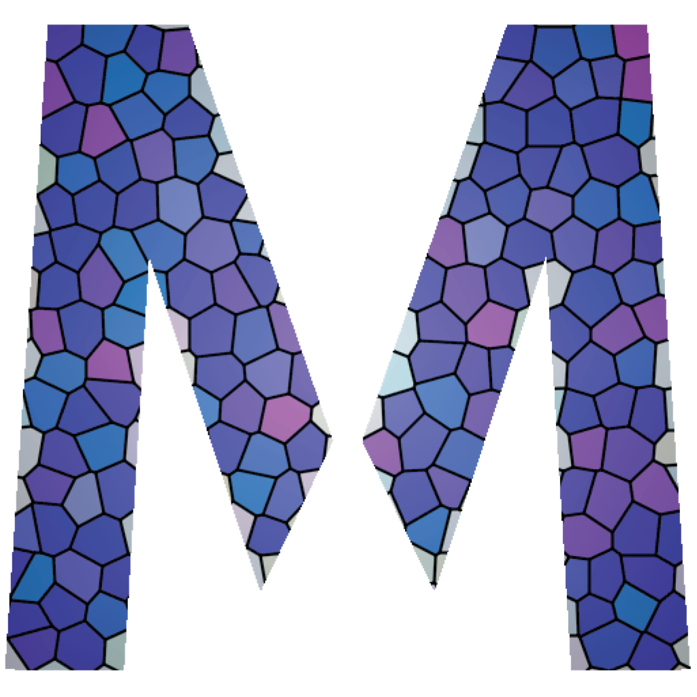
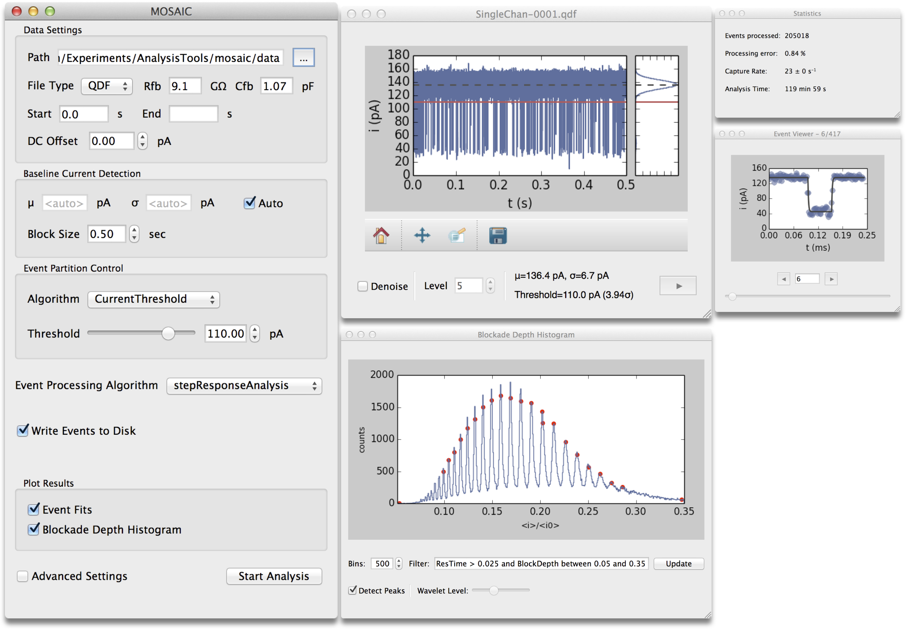
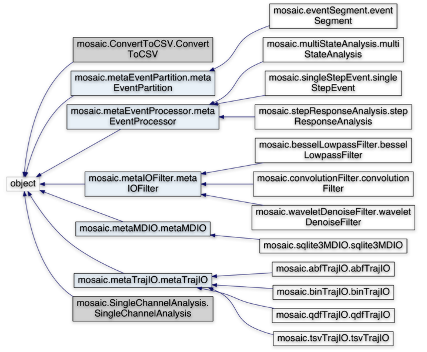
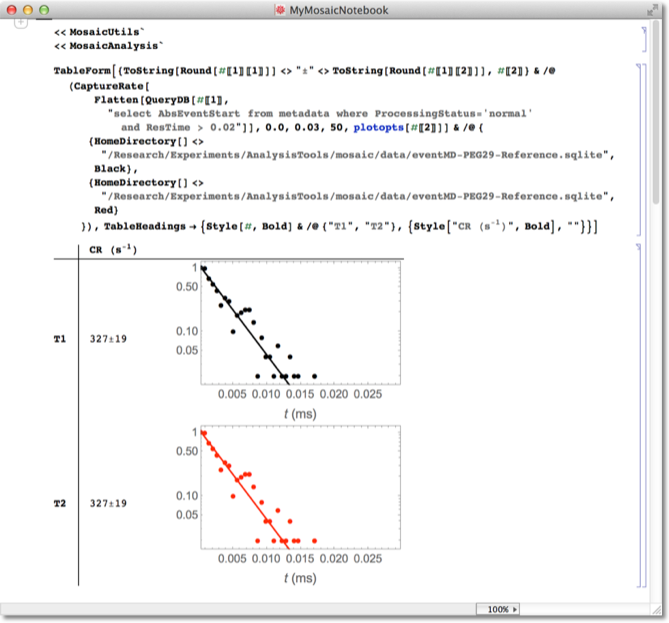
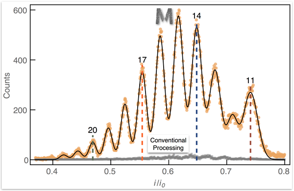
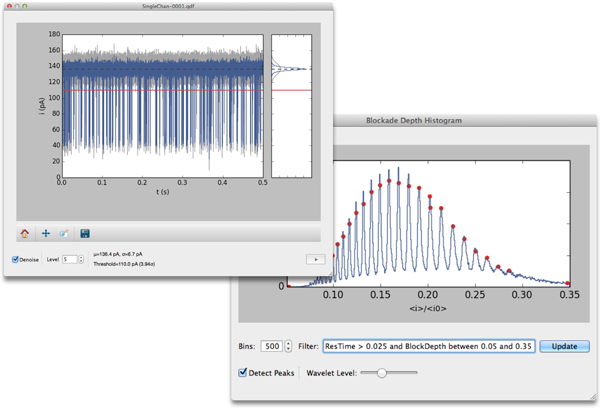

|  |
MOSAIC is a modular single-molecule nanopore analysis toolbox to decode multi-state nanopore data. MOSAIC leverages the underlying physics of the system to considerably increase the information retrieved from experimental data. |
Download MOSAICDocumentation (pdf) Mailing List Develop MOSAIC |
Intuitive Graphical Interface
MOSAIC’s GUI greatly simplifies analyzing data from single-molecule nanopore experiments. The GUI provides easy access to most common algorithms and data types. It is a powerful new way to visualize your raw data and verify your analysis. |
Powerful Scripting
MOSAIC can be scripted to run multiple analyses in batch mode. Leveraging the power of Python, MOSAIC can also be integrated into custom scripts and workflows. |
|  |
Easily Extensible
MOSAIC leverages object oriented design and is modular. If the functionality you want is not available out of the box, it can be added with little effort. |
Fits Your Existing Workflow
Use Mathematica, or MATLAB, or IGOR? MOSAIC can be integrated into your existing analysis workflow. |
|  |  |
Extract More From Your Data
MOSAIC’s novel algorithms allow you to see events that other software frequently misses. MOSAIC leverages a physical model of the system response to recover events from fast transients. |
Get Results Faster
Configuring and analyzing a large number of data sets, each with their own unique parameters, is challenging. MOSAIC speeds up and automates your analysis with baseline tracking, wavelet denoising, DC offset compensation, and peak detection. |
|  |  |
| MOSAIC Developers Contact Terms of Use | National Institute of Standards and Technology ( NIST) |